Every screen below is the real application, captured end to end in one unbroken run — signing up, being placed, and finishing two sessions. Nothing is mocked up.
Ana moved to Copenhagen eight months ago and attends Danskuddannelse 3 two evenings a week. She can follow most of what her colleagues say and freezes when she has to answer. She has twenty-five minutes after dinner and no appetite for deciding what to study.
No email confirmation, no onboarding carousel. The account exists only in her browser — there is no server, and her record never leaves the machine she is sitting at.
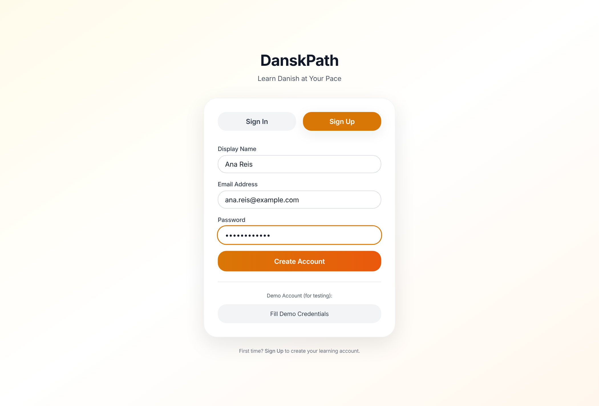
Before anything else, seventeen items spread across reading, grammar, listening and speaking. It is the only time the app asks her a long series of questions in a row.
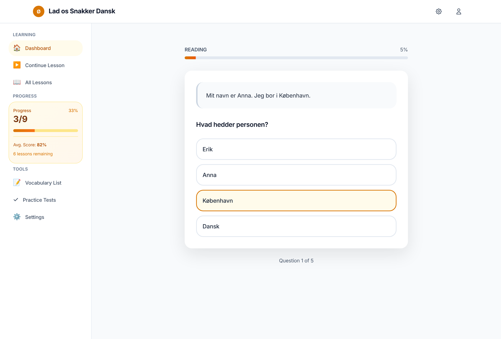
This is the moment the product exists for. Ana scores 100% on listening and 40% on grammar. She is not "an A1 learner" or "a B1 learner" — she is a strong listener who cannot yet produce, which is exactly what half a year of evening classes tends to produce.
A single-number app would average this into something true of nobody and then teach to that average.
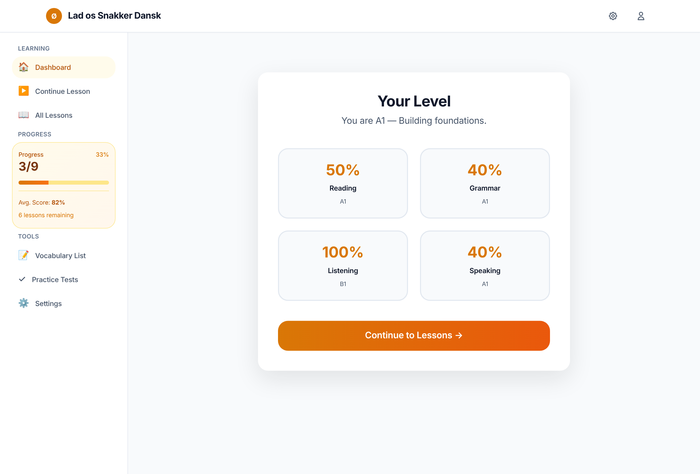
These four scores seed seven independent difficulty ladders. Writing starts a notch below grammar, because production trails recognition for nearly every learner; vocabulary follows reading; pronunciation follows speaking.
She opens the app and there is no menu, no streak to protect, no choice to make. Four steps, thirty-nine minutes, and each one says why it was chosen — 0 af 18 klaret i dette modul — største hul lige nu.
Look at the second step. Listening is set at B2 on her very first day, while her reading and grammar sit at A2. The placement test is not a formality she passed through; it decided what she is about to hear.
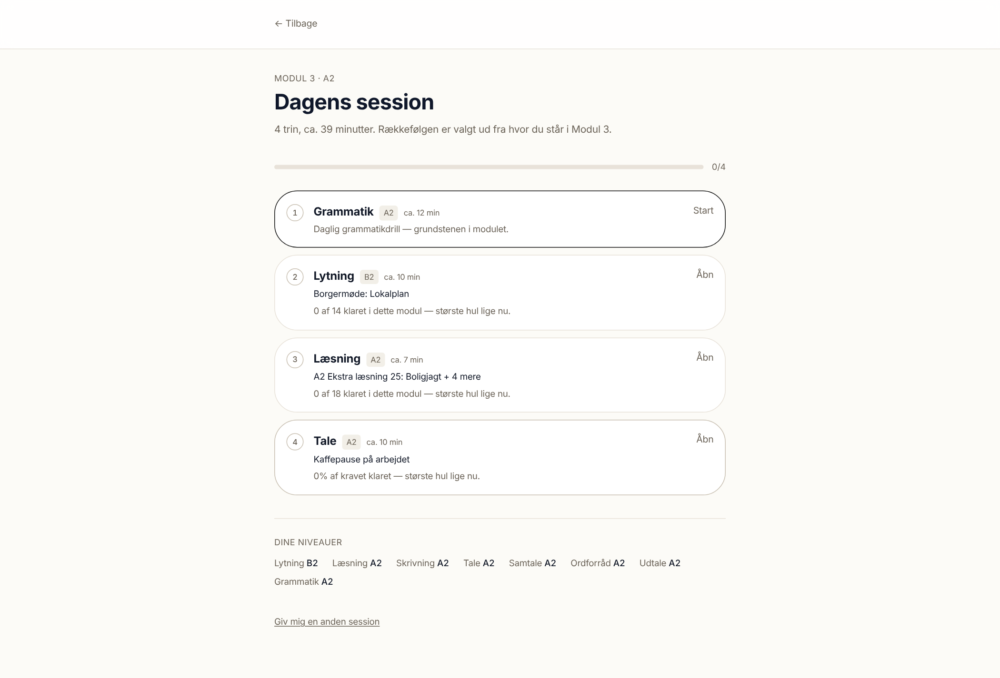
Tapping the first step puts her on question one. It does not ask how long she wants to practise or what she would like to focus on; the plan settled that, and asking twice is how a tired Tuesday turns into no practice at all.
Fifteen items, drawn from her weakest error categories at her current level, with nothing repeated inside the sitting.
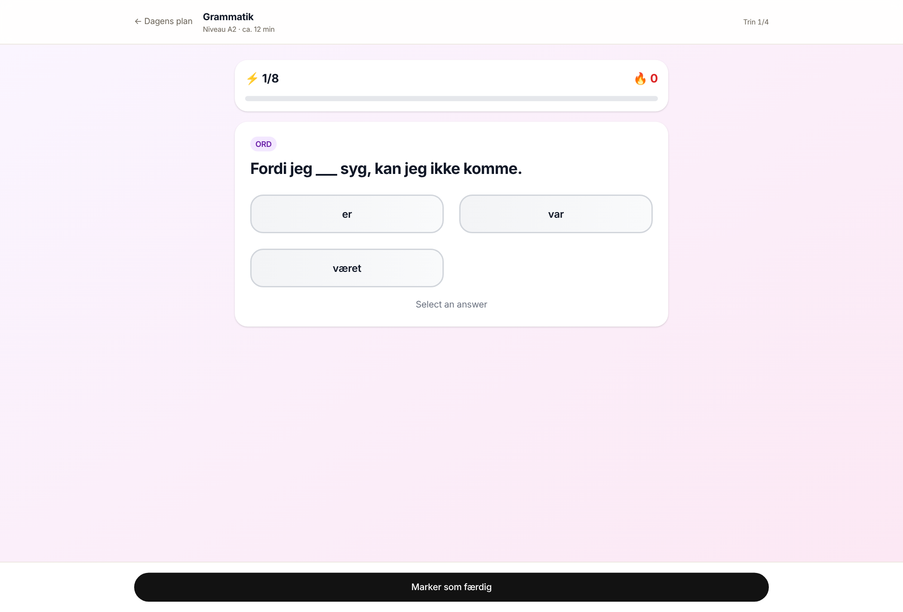
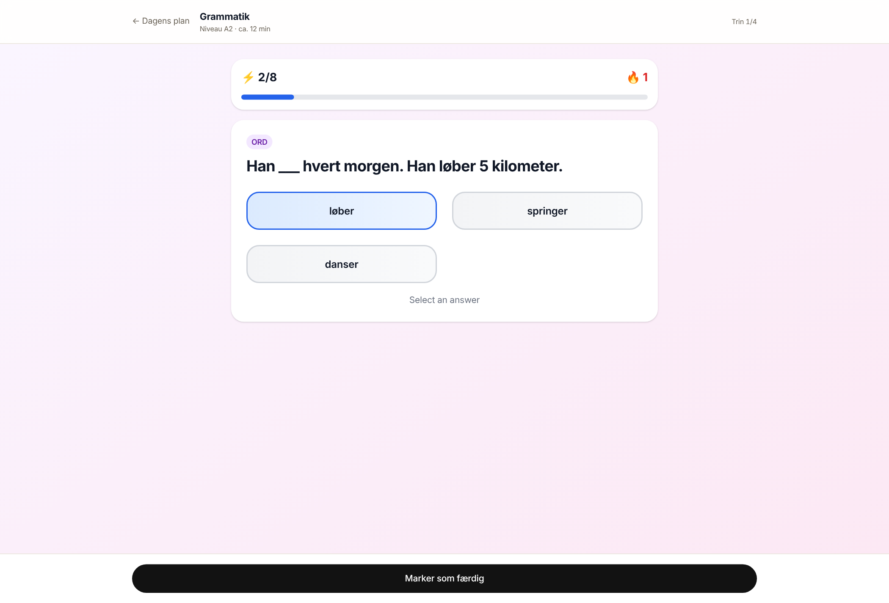
Back on the plan, grammar is ticked and the progress bar has advanced. Her result has already been folded into tomorrow's starting level for that skill.
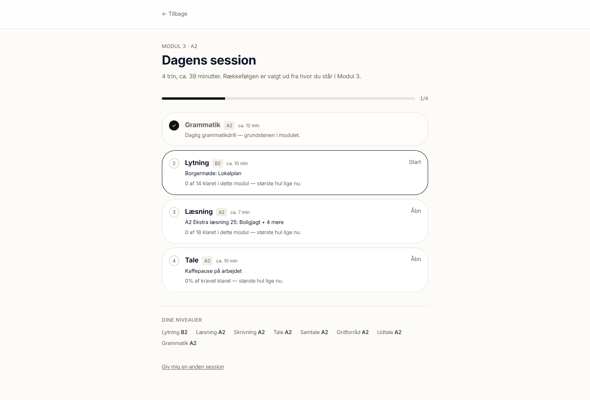
Ana hears Borgermøde: Lokalplan — a council meeting about a local planning decision. That is a B2 clip, and she gets it on day one because she earned it in the placement test forty minutes earlier.
The library of other clips is hidden while she is in a session. The plan already chose; showing her twenty-five alternatives would only invite her off the rails.
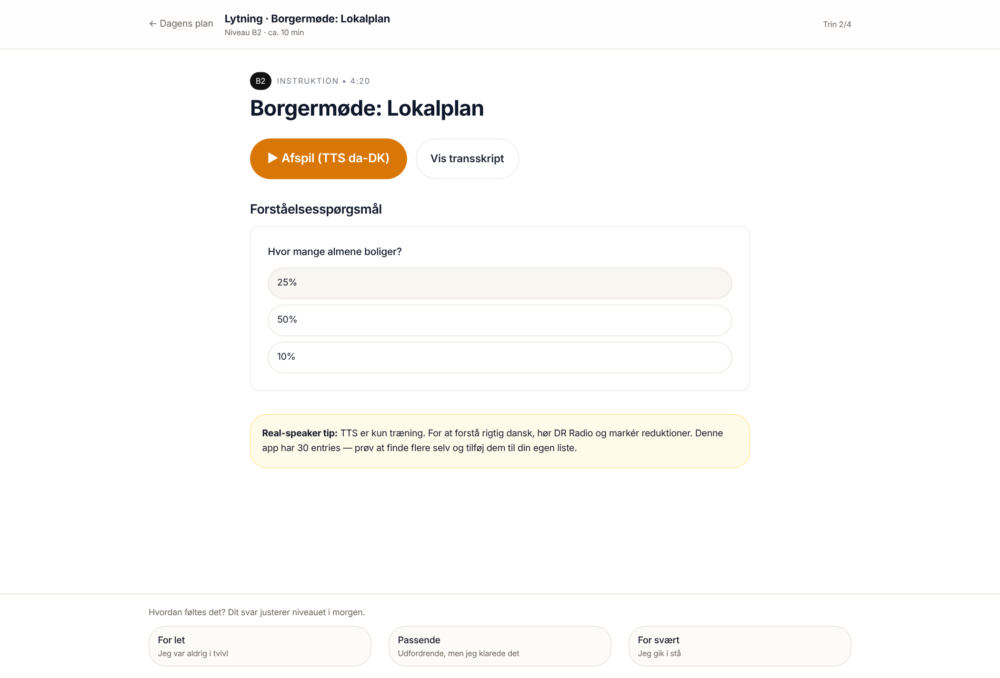
Grammar scores itself. Listening, reading, writing and speaking cannot be marked honestly by any app, so each closes with three buttons: For let, Passende, For svært.
That one tap is not decoration. It moves the ladder for that skill, which changes what she is given tomorrow.
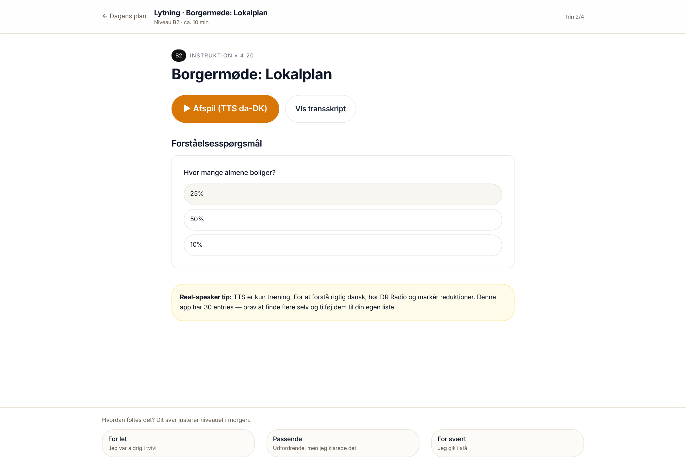
Four steps, four ticks. Her levels are listed at the bottom: listening has held at B2, everything else is still A2. One day in a row.
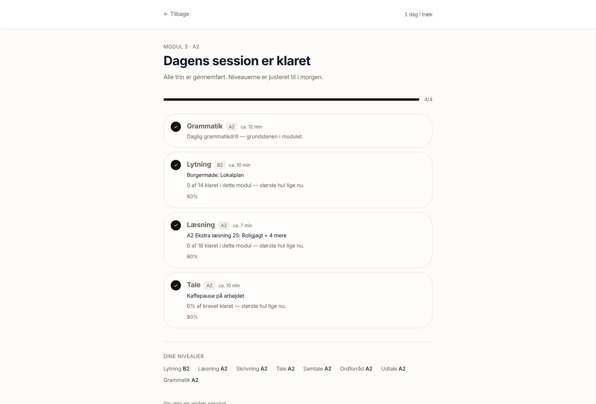
She comes back and gets writing, vocabulary and pronunciation — none of which she did yesterday. Nothing she has already read or heard will be served to her again.
This is the rotation working: skills are chosen by how far they sit from her Modul 3 requirement and by how long since she last touched them, so nothing goes stale for more than about a week and no single skill can monopolise her evenings.
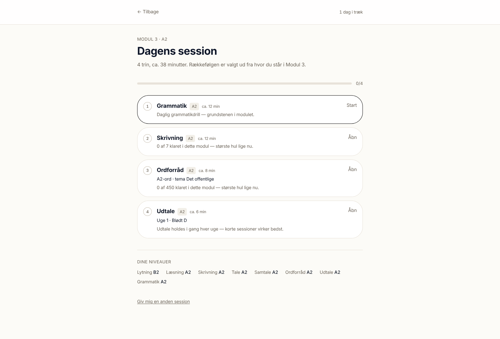
Four things she would run into, stated because a walkthrough that only shows the happy path is an advertisement.